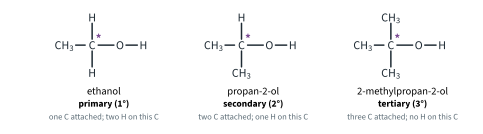
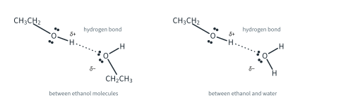
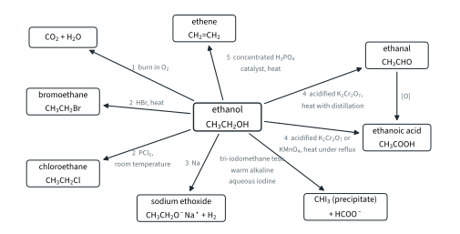
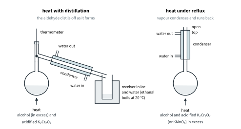
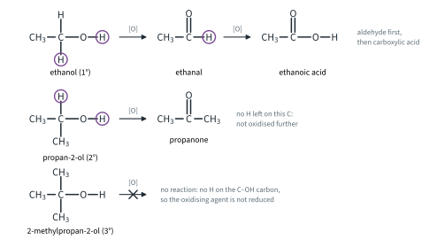
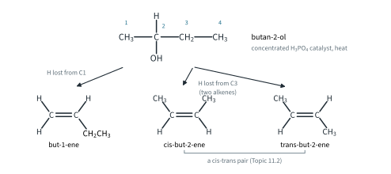
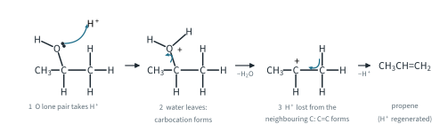
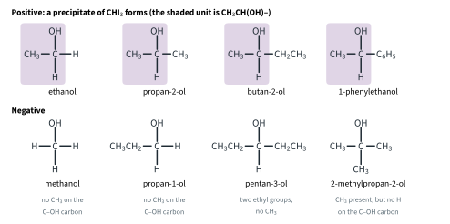

Hydroxy Compounds 1
Topic 11.6 · Hydroxy Compounds Part 1
On this page
Introduction
Hydroxy compounds contain the –OH group. If the –OH is attached to an alkyl carbon (an sp3 carbon), the compound is an alcohol; if it is attached directly to a carbon of a benzene ring, the compound is a phenol. The two behave quite differently, because in phenol the oxygen's lone pair interacts with the ring (Part 2).
The alcohols form a homologous series with general formula CnH2n+1OH (Topic 11.1). 9476 uses ethanol, CH3CH2OH, as the example, but the chemistry is the chemistry of the –OH group, so it applies to any alcohol. What changes from one alcohol to another is mainly decided by one thing: what is attached to the carbon that carries the –OH. This Part covers the reactions of alcohols, how to tell primary, secondary and tertiary alcohols apart, and the tri-iodomethane test. Part 2 covers phenol, and why water, phenol and ethanol differ as acids.
Classifying alcohols
Alcohols are classed by the carbon atom that carries the –OH group, in the same way as halogenoalkanes (Topic 11.3, degree of substitution). Count the carbon atoms bonded to that carbon:
- A primary (1°) alcohol has one carbon atom attached to the C–OH carbon (methanol, with none, behaves like a primary alcohol).
- A secondary (2°) alcohol has two.
- A tertiary (3°) alcohol has three.

Look at the hydrogen atoms on the starred carbon: a primary alcohol has two, a secondary alcohol one, and a tertiary alcohol none. Keep this in mind: it decides how far an alcohol can be oxidised (section 4).
Worked example 1. Draw and classify the alcohols with molecular formula C4H10O.
(To answer this, you have to put the four carbons in every possible chain, then put the –OH on each different carbon.) A chain of four carbons gives two alcohols; a branched chain of three carbons with a methyl group gives two more:
| Name | Structural formula | Class | H atoms on the C–OH carbon |
|---|---|---|---|
| butan-1-ol | CH3CH2CH2CH2OH | primary | 2 |
| butan-2-ol | CH3CH2CH(OH)CH3 | secondary | 1 |
| 2-methylpropan-1-ol | (CH3)2CHCH2OH | primary | 2 |
| 2-methylpropan-2-ol | (CH3)3COH | tertiary | 0 |
Butan-2-ol has a chiral centre (H, OH, CH3 and CH2CH3 on one carbon), so it exists as a pair of enantiomers (Topic 11.2). The other three C4H10O isomers are ethers, such as CH3OCH2CH2CH3, not alcohols.
Hydrogen bonding and solubility
The O–H bond is strongly polar, so alcohols form hydrogen bonds with one another and with water (Topic 2 Part 3).

This is why ethanol (Mr 46.0) boils at 78 °C, while methoxymethane, CH3OCH3, with the same Mr but no O–H bond, boils at −24 °C, and propane (Mr 44.0) at −42 °C (literature values). It is also why the small alcohols mix with water in all proportions. As the hydrocarbon chain gets longer, it takes up more room without hydrogen bonding, and the solubility in water falls.
Because they dissolve both polar and many non-polar substances, ethanol, methanol and propan-2-ol are among the most widely used solvents, in the laboratory and in industry.
How alcohols react
Before the reactions, it helps to see where an alcohol can react. There are three places:
- The O–H bond breaks. The H leaves as H+ (or as H atoms forming H2), and the oxygen keeps the electrons. This happens with sodium (section 3), and it is the basis of the acidity of alcohols and phenols (Part 2).
- The C–O bond breaks. The whole –OH group is replaced (substitution to halogenoalkanes, section 2) or removed with a neighbouring H atom (dehydration to alkenes, section 5). The lone pairs on the oxygen let it accept H+ from a strong acid first, which makes the C–O bond easier to break.
- H atoms on the C–OH carbon are removed. This is oxidation (section 4), and it is why the class of the alcohol matters.
(Bond energies alone do not decide which bond breaks: the C–O bond, 360 kJ mol−1, is weaker than O–H, 460 kJ mol−1 (Data Booklet), yet sodium breaks the O–H bond. The reagent decides.) Fig 3 summarises the reactions of ethanol; the numbers on the arrows are the section numbers below.

1. Combustion
Alcohols burn in air with a clean, almost colourless (pale blue) flame, giving carbon dioxide and water:
CH3CH2OH(l) + 3O2(g) → 2CO2(g) + 3H2O(l) ΔHc⦵ = −1367 kJ mol−1
CH3CH2CH2OH(l) + 4½O2(g) → 3CO2(g) + 4H2O(l) ΔHc⦵ = −2021 kJ mol−1
(literature values, as in Topic 7). Ethanol made by fermentation is used as a fuel (bioethanol), usually blended with petrol. In a limited supply of air, combustion is incomplete and carbon monoxide forms: CH3CH2OH(l) + 2O2(g) → 2CO(g) + 3H2O(l).
2. Forming halogenoalkanes
The –OH group can be replaced by a halogen atom. This is a nucleophilic substitution, and the product is a halogenoalkane, whose own reactions are in Topic 11.5. Two reagents are named in 9476.
With hydrogen halides, HX
Heating an alcohol with a hydrogen halide replaces –OH by –X:1
ROH + HX → RX + H2O
CH3CH2OH + HBr → CH3CH2Br + H2O (HBr, heat)
The bromoethane (b.p. 38 °C, literature value) distils off as it forms and is collected as a dense, oily liquid under water.2
With phosphorus(V) chloride, PCl5
Phosphorus(V) chloride (phosphorus pentachloride) reacts with alcohols at room temperature:
CH3CH2OH + PCl5 → CH3CH2Cl + POCl3 + HCl (PCl5, room temperature)
The reaction gives off steamy white fumes of HCl, which turn moist blue litmus red and form white smoke with ammonia (NH3 + HCl → NH4Cl). The apparatus and the alcohol must be dry, because PCl5 also reacts with water (Topic 5 Part 2). The steamy fumes are a test for an –OH group, but not a test for alcohols in particular: water and carboxylic acids give them too.3
3. Reaction with sodium
Sodium reacts with ethanol, breaking the O–H bond. Hydrogen is given off, and sodium ethoxide forms, which stays dissolved in the excess ethanol:
2CH3CH2OH + 2Na → 2CH3CH2O−Na+ + H2
Compare the reaction with water:
| Sodium with water | Sodium with ethanol | |
|---|---|---|
| Where the sodium is | floats (it is less dense than water) | sinks (it is denser than ethanol) |
| What happens | melts into a ball, darts about, fizzes vigorously | fizzes steadily and slowly dissolves |
| Product | NaOH(aq) + H2(g) | sodium ethoxide, CH3CH2O−Na+ + H2 |
In both reactions the O–H bond breaks and the oxygen compound acts as a proton donor (an acid). The reaction with ethanol is gentler because ethanol is a weaker acid than water; Part 2 explains why. Evaporating the excess ethanol leaves sodium ethoxide as a white solid. The ethoxide ion is a strong base, at least as strong as the hydroxide ion. If water is added, ethoxide ions take protons from the water molecules; because the water is in huge excess, the position of equilibrium lies to the right, and the solution becomes strongly alkaline:
CH3CH2O−(aq) + H2O(l) ⇌ CH3CH2OH(aq) + OH−(aq)
Effervescence with sodium shows an O–H group is present (water, alcohols, phenols and carboxylic acids all give hydrogen); the gas burns with a squeaky pop.
Worked example 2. 2.30 g of ethanol reacts with excess sodium. Calculate the volume of hydrogen formed at r.t.p.
n(ethanol) = 2.30 / 46.0 = 0.0500 mol n(H2) = ½ × 0.0500 = 0.0250 mol
V(H2) = 0.0250 × 24 = 0.60 dm3 (600 cm3)
(24 dm3 mol−1 at r.t.p. is the Data Booklet value. The ethanol is a liquid, so only the hydrogen is converted to a gas volume.)
4. Oxidation
Primary and secondary alcohols are oxidised by heating with an acidified solution of an oxidising agent. As in Topic 11.3, [O] stands for an oxygen atom from the oxidising agent. Two oxidising agents are used, and both change colour when they react, which is useful as a test:
| Oxidising agent | Colour before | Colour after | Change in the oxidising agent |
|---|---|---|---|
| acidified potassium dichromate(VI), K2Cr2O7 (with dilute H2SO4) | orange | green | Cr2O72− → Cr3+ |
| acidified potassium manganate(VII), KMnO4 (with dilute H2SO4) | purple | colourless | MnO4− → Mn2+ |
Primary alcohols: aldehydes, then carboxylic acids
A primary alcohol is oxidised in two stages: first to an aldehyde, then to a carboxylic acid:
CH3CH2OH + [O] → CH3CHO + H2O (ethanal)
CH3CHO + [O] → CH3COOH (ethanoic acid)
overall: CH3CH2OH + 2[O] → CH3COOH + H2O
Which product you get depends on how you heat the mixture.
- To stop at the aldehyde: acidified K2Cr2O7, heat with distillation. The alcohol is used in excess and the oxidising agent is added slowly. The aldehyde has the lowest boiling point in the flask, because it has no O–H group and so no hydrogen bonding between its molecules. It distils off as soon as it forms, before it can be oxidised further. Ethanal boils at only 20 °C, so the receiver is cooled in ice.
- To go on to the carboxylic acid: acidified K2Cr2O7, or acidified KMnO4, heat under reflux, with the oxidising agent in excess. The vapour condenses in the vertical condenser and runs back into the flask, so the aldehyde stays in the mixture until it is oxidised to the acid.

The boiling points (literature values) show why distillation separates the aldehyde:
| Compound | b.p. / °C | Compound | b.p. / °C |
|---|---|---|---|
| ethanal | 20 | propanal | 48 |
| ethanol | 78 | propan-1-ol | 97 |
| ethanoic acid | 118 | propanoic acid | 141 |
Propan-1-ol behaves in the same way: CH3CH2CH2OH + [O] → CH3CH2CHO + H2O (propanal), and CH3CH2CH2OH + 2[O] → CH3CH2COOH + H2O (propanoic acid).
Secondary alcohols: ketones
A secondary alcohol is oxidised to a ketone by acidified K2Cr2O7, heat (acidified KMnO4 works too):
CH3CH(OH)CH3 + [O] → CH3COCH3 + H2O (propan-2-ol → propanone)
CH3CH2CH(OH)CH3 + [O] → CH3CH2COCH3 + H2O (butan-2-ol → butanone)
The carbon of the C=O group in a ketone has no hydrogen atom left on it, so ketones are not oxidised further by these reagents. No distillation is needed: heating under reflux or with distillation gives the same product.
Tertiary alcohols: no oxidation
A tertiary alcohol, such as 2-methylpropan-2-ol, has no hydrogen atom on the C–OH carbon, so it cannot be oxidised in this way. The acidified dichromate(VI) stays orange (or the manganate(VII) stays purple).

Further example: the full equations. The [O] equations hide the oxidising agent. The full ionic equations are built from half-equations (as in Topic 6 Part 2; the method is in Topic 12). For dichromate(VI):
Cr2O72−(aq) + 14H+(aq) + 6e− → 2Cr3+(aq) + 7H2O(l)
CH3CH2OH(aq) → CH3CHO(aq) + 2H+(aq) + 2e−
Multiplying the second half-equation by 3, so that 6 electrons are transferred, and adding:
3CH3CH2OH(aq) + Cr2O72−(aq) + 8H+(aq) → 3CH3CHO(aq) + 2Cr3+(aq) + 7H2O(l)
To the acid, each ethanol loses 4 electrons (CH3CH2OH + H2O → CH3COOH + 4H+ + 4e−), which gives:
3CH3CH2OH(aq) + 2Cr2O72−(aq) + 16H+(aq) → 3CH3COOH(aq) + 4Cr3+(aq) + 11H2O(l)
5CH3CH2OH(aq) + 4MnO4−(aq) + 12H+(aq) → 5CH3COOH(aq) + 4Mn2+(aq) + 11H2O(l)
Worked example 3 (Further example). What volume of 0.0200 mol dm−3 K2Cr2O7 oxidises 0.00300 mol of ethanol to ethanal?
n(Cr2O72−) = 0.00300 / 3 = 0.00100 mol V = 0.00100 / 0.0200 = 0.0500 dm3 = 50.0 cm3
The orange to green colour change of dichromate(VI) with ethanol is the basis of the old roadside breath test for alcohol.
Worked example 4. 4.60 g of ethanol was heated under reflux with excess acidified K2Cr2O7, and 4.50 g of ethanoic acid was obtained. Calculate the percentage yield.
n(ethanol) = 4.60 / 46.0 = 0.100 mol = n(ethanoic acid) expected
theoretical mass = 0.100 × 60.0 = 6.00 g yield = (4.50 / 6.00) × 100 = 75.0 %
5. Dehydration
Heating an alcohol with concentrated phosphoric(V) acid removes a molecule of water and gives an alkene. This is an elimination (Topic 11.3): the –OH and an H atom from a neighbouring carbon are removed, and a C=C bond forms between the two carbons. The H3PO4 is a catalyst. The alkene, a gas for two to four carbons, is collected over water.4
CH3CH2OH → CH2=CH2 + H2O (concentrated H3PO4 catalyst, heat)
CH3CH(OH)CH3 → CH3CH=CH2 + H2O
(CH3)3COH → (CH3)2C=CH2 + H2O
When the –OH is not at the end of the chain, and the two neighbouring carbons are different, more than one alkene can form. Butan-2-ol can lose an H atom from C1 or from C3, and the but-2-ene formed from C3 exists as a cis-trans pair (Topic 11.2), so three alkenes form:

Worked example 5. How many alkenes form when pentan-3-ol, CH3CH2CH(OH)CH2CH3, is dehydrated?
(You have to look at both neighbouring carbons, then check each product for cis-trans isomerism.) Both neighbours of C3 are CH2 groups in identical ethyl groups, so losing H from either gives the same structure, pent-2-ene, CH3CH=CHCH2CH3. Each carbon of its C=C carries two different groups, so it exists as cis- and trans-pent-2-ene: two alkenes.

Distinguishing primary, secondary and tertiary alcohols
Because the three classes behave differently on oxidation, a mild oxidation tells them apart. Warm the alcohol with acidified K2Cr2O7, then heat with distillation, and test whatever distils over. The tests on the distillate (Tollens' reagent, Fehling's solution and 2,4-DNPH) are explained in Topic 11.7.
| Test | Primary (e.g. propan-1-ol) | Secondary (e.g. propan-2-ol) | Tertiary (e.g. 2-methylpropan-2-ol) |
|---|---|---|---|
| Warm with acidified K2Cr2O7 | orange → green | orange → green | stays orange |
| Distillate + Tollens' reagent, warm | silver mirror (an aldehyde) | no change (a ketone) | no carbonyl compound forms |
| Distillate + Fehling's solution, warm | brick-red precipitate | no change | no carbonyl compound forms |
| Distillate + 2,4-DNPH | orange precipitate | orange precipitate | no precipitate |
| Warm alkaline aqueous iodine | only ethanol gives a pale yellow precipitate | only if CH3CH(OH)– is present (propan-2-ol, butan-2-ol) | no precipitate |
Acidified KMnO4 can be used in the same way (purple to colourless with 1° and 2° alcohols, no change with 3°), but it also reacts with other groups, such as C=C, so the dichromate test is the cleaner one.5
Worked example 6. Compound A, C4H10O, fizzes with sodium. When it is warmed with acidified K2Cr2O7, the solution turns from orange to green; the distillate gives an orange precipitate with 2,4-DNPH but no silver mirror with Tollens' reagent. A gives a pale yellow precipitate with warm alkaline aqueous iodine. A has a chiral centre. Identify A.
(To answer this, take each clue in turn and see what it rules out.) Fizzing with sodium: an O–H group, so A is one of the four alcohols of Worked example 1. Orange to green: A is oxidised, so it is primary or secondary. The distillate is a carbonyl compound (2,4-DNPH) but not an aldehyde (Tollens'), so it is a ketone and A is secondary. The only secondary C4H10O alcohol is butan-2-ol, CH3CH2CH(OH)CH3; it contains CH3CH(OH)– (the iodine test, below) and a chiral centre, which agrees. A is butan-2-ol and the distillate is butanone, CH3CH2COCH3.
The tri-iodomethane test
This test picks out one particular arrangement of atoms. The reagent is warm alkaline aqueous iodine (iodine solution with NaOH(aq)). A positive result is a pale yellow precipitate of tri-iodomethane, CHI3, which has an antiseptic smell. The brown colour of the iodine fades.
For alcohols, the test is positive when the compound contains the group CH3CH(OH)–: a CH3 group and an H atom on the carbon that carries the –OH. That is, compounds CH3CH(OH)R, where R is H, an alkyl group or an aryl group (Fig 8, below).
What happens is in two stages.
Stage (1). The alkaline iodine oxidises CH3CH(OH)R to CH3COR. This is why the C–OH carbon must carry an H atom: 2-methylpropan-2-ol has a CH3 next to the C–OH carbon, but cannot be oxidised, so it gives no precipitate.
(1) CH3CH(OH)R + I2 + 2OH− → CH3COR + 2I− + 2H2O
Stage (2). Starting from CH3COR, the three H atoms of the CH3 next to C=O are replaced by I, and OH− then breaks the C–C bond, giving CHI3 and the carboxylate ion RCOO−, which has one carbon fewer than the alcohol.
(2) CH3COR + 3I2 + 4OH− → CHI3 + RCOO− + 3I− + 3H2O
Adding (1) and (2) gives the overall equation:
CH3CH(OH)R + 4I2(aq) + 6OH−(aq) → CHI3(s) + RCOO−(aq) + 5I−(aq) + 5H2O(l)
For ethanol R = H and the organic product is the methanoate ion, HCOO−; for propan-2-ol R = CH3 and it is the ethanoate ion:
CH3CH2OH + 4I2(aq) + 6OH−(aq) → CHI3(s) + HCOO−(aq) + 5I−(aq) + 5H2O(l)
CH3CH(OH)CH3 + 4I2(aq) + 6OH−(aq) → CHI3(s) + CH3COO−(aq) + 5I−(aq) + 5H2O(l)
Ethanol is the only primary alcohol that gives the test (R must be H). Stage (2) shows that carbonyl compounds that already have a CH3CO– group give the same precipitate: ethanal and methyl ketones such as propanone. That use of the test is in Topic 11.7.

Worked example 7. What is the greatest mass of tri-iodomethane that 0.600 g of propan-2-ol can give, and how many moles of iodine does it use?
n(propan-2-ol) = 0.600 / 60.0 = 0.0100 mol = n(CHI3) mass = 0.0100 × 393.7 = 3.94 g
n(I2) = 4 × 0.0100 = 0.0400 mol
Making alcohols
You meet the ways of making alcohols in the topics on the compounds they are made from. For reference:
| Made from | Reagent and conditions | Where |
|---|---|---|
| an alkene | H2O(g), H3PO4 catalyst (electrophilic addition of steam) | Topic 11.4 Part 1 |
| a halogenoalkane | NaOH(aq), heat (hydrolysis) | Topic 11.5 |
| an aldehyde or a ketone | LiAlH4 in dry ether, or H2(g), Ni catalyst, heat (reduction) | Topic 11.7 |
| sugars | fermentation by yeast (ethanol) | general knowledge |
Summary of the reactions of ethanol
| Reagent and conditions | Product | Type of reaction | What you see |
|---|---|---|---|
| burn in O2 | CO2 + H2O | combustion | pale blue flame |
| HBr, heat | bromoethane | nucleophilic substitution | oily liquid distils |
| PCl5, room temperature | chloroethane + POCl3 + HCl | nucleophilic substitution | steamy white fumes |
| Na | sodium ethoxide + H2 | redox (ethanol acts as an acid) | fizzing; sodium sinks and dissolves |
| acidified K2Cr2O7, heat with distillation | ethanal | oxidation | orange → green |
| acidified K2Cr2O7 or KMnO4, heat under reflux | ethanoic acid | oxidation | orange → green (purple → colourless) |
| concentrated H3PO4 catalyst, heat | ethene | elimination (dehydration) | gas collected |
| warm alkaline aqueous iodine | CHI3 + methanoate | oxidation, then substitution and cleavage | pale yellow precipitate |
Additional information
- Beyond the syllabus: in the laboratory, HBr is usually made in the flask from sodium bromide and concentrated sulfuric acid, NaBr + H2SO4 → NaHSO4 + HBr. HI is made from KI and concentrated phosphoric(V) acid instead, because concentrated sulfuric acid oxidises HI (and some HBr) to the halogen. HCl reacts only slowly with primary alcohols (a ZnCl2 catalyst and heat are needed), but 2-methylpropan-2-ol reacts with concentrated hydrochloric acid on shaking at room temperature. ↩
- Beyond the syllabus: OH− is a poor leaving group, so the acid first protonates the oxygen (ROH + H+ → ROH2+). Water is a good leaving group, and the halide ion then substitutes by SN2 (primary alcohols) or SN1 (tertiary alcohols), as in Topic 11.3. ↩
- Beyond the syllabus: phosphorus(III) chloride, PCl3, and sulfur dichloride oxide (thionyl chloride), SOCl2, also convert alcohols to chloroalkanes. With SOCl2 both by-products, SO2 and HCl, are gases, so the product is easy to separate. ↩
- Beyond the syllabus: ethene is also made by passing ethanol vapour over heated aluminium oxide. Concentrated sulfuric acid dehydrates alcohols too, but it also oxidises some of the alcohol (forming SO2 and charring the mixture), which is why phosphoric(V) acid is preferred. ↩
- Beyond the syllabus: the Lucas test (ZnCl2 in concentrated hydrochloric acid, room temperature) uses the ease of substitution instead. A tertiary alcohol turns the mixture cloudy at once (an insoluble chloroalkane forms), a secondary alcohol within a few minutes, and a primary alcohol stays clear. ↩